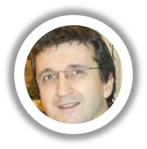
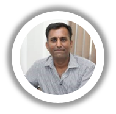
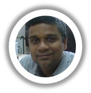
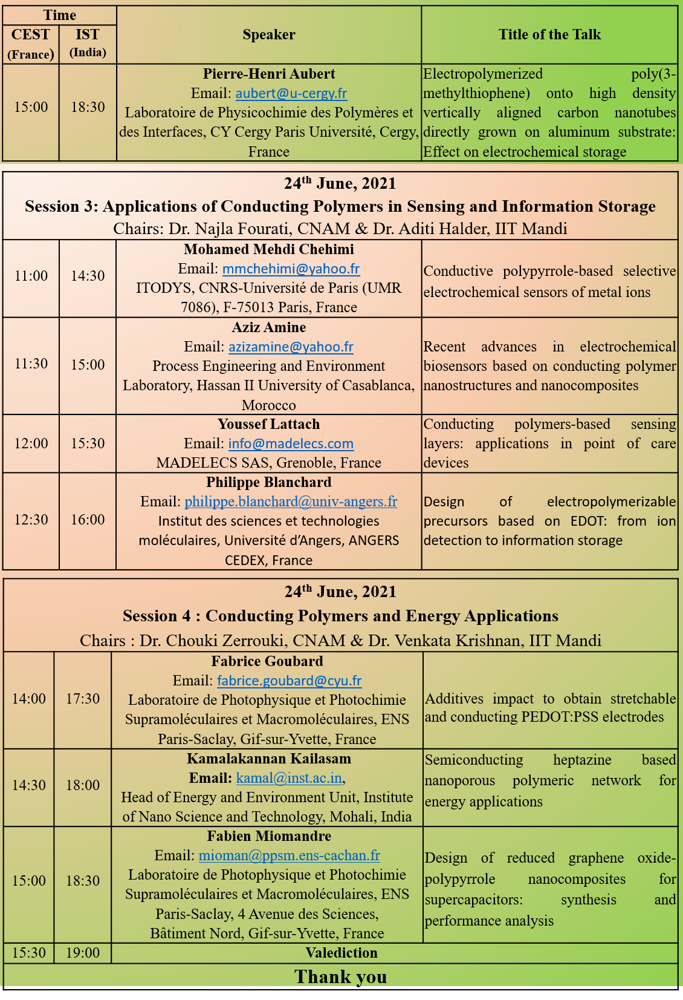
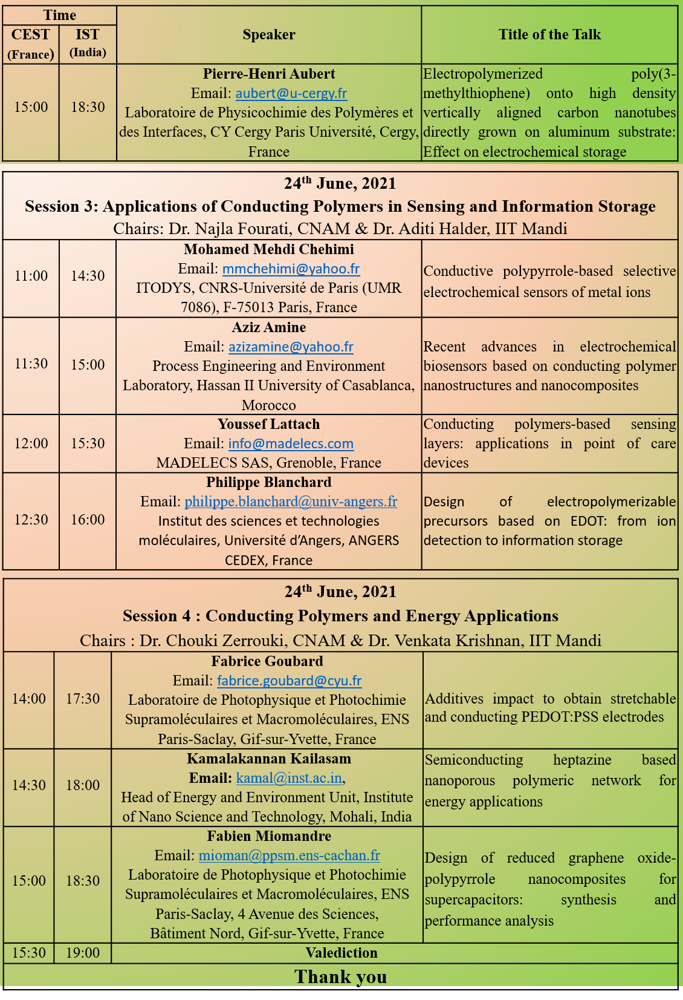

International Virtual Workshop Under Indo-French SPARC Scheme of Ministry of Education
Recent Advances & Applications of Conducting Polymer Nanostructures & Nanocomposites
RA2CPNC
23-24 June 2021

About RA2CPNC
This workshop provides a common platform to scientific experts working in the field of conducting polymers to share their knowledge and experiences with attendees from across the world. The scientific program of the workshop consists of carefully selected lectures from distinguished speakers to cover the variety of technologies and processes involved in the synthesis of polymeric nanostructures and their nanocomposites. Special attention has been given to the emerging areas of application in the field of conducting polymers such as energy, devices, sensing and catalysis
Indian Institute of Technology Mandi
has been established with a vision to be a leader in science and technology education, knowledge creation and innovation, in an India marching towards a just, inclusive and sustainable society.
SPARC
Scheme for the Promotion of Academic and Research Collaboration (SPARC) is a flagship program of the Ministry of Education, Government of India. It aims at improving the research ecosystem of India’s higher educational institutions by facilitating academic and research collaborations between Indian institutions and the best institutions in the world from 28 selected nations to jointly solve problems of national and/or international relevance.
Speakers
  Registration Details
Important Dates
Who should attend?
The workshop is aimed at disseminating current trends in research on conducting polymers synthesis and potential applications in various technological domains. This could be useful for emerging researchers and young faculty members who are doing research in the associated areas. Graduate and post-graduate students who wish to pursue a career in chemistry, material science, energy and environment disciplines are also encouraged to apply. Interested person should register online through:
Registration is free of cost
Link to Access the workshop along with other necessary instruction shall be sent to all accepted participants two days prior to start of the workshop.
The workshop will be conducted through Cisco Webex platform.
 

Organized by
Indian Institute of Technology Mandi (HP), India
University Paris-Saclay, Orsay & CNAM, Paris, France
Contact